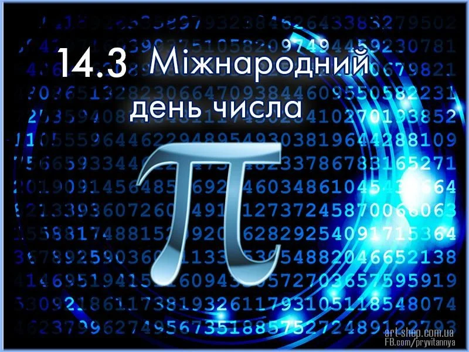
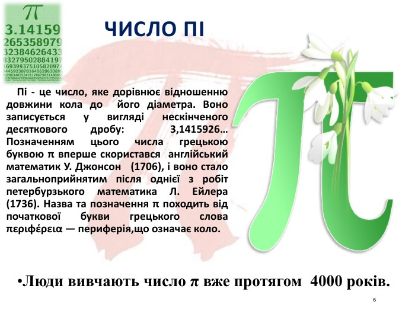
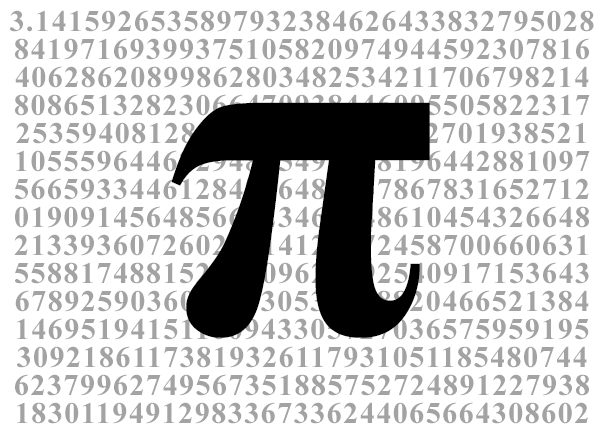

Добрий День
Тут цікаві факти про число пі
Міжнародний день числа пі

Число пі це

Ціле число пі

День числа Пі
День пі — неофіційне свято, присвячене числу π. Воно святкується 14 березня, що в прийнятому в США форматі записується як 3.14, що є трьома першими розрядами числа π.
загалі число Пі цікаве тим, що допомагає людям зазирнути у безкінечність. Станом на сьогодні воно обчислене до квадрильйонів знаків після коми. І послідовності, в які складаються ці цифри, дуже займають математиків. Наприклад, в числі Пі зустрічаються по порядку 0,1,2,3,4,5,6,7,8,9.
от обчисленням наступних знаків після 3,14 (як ось 3.1415926…) вчені займаються більше 4 500 років. Починаючи з Архімеда, який у ІІІ тисячолітті до нашої ери отримав значення 3,142, і закінчуючи непрофесійним математиком на прізвище Шенкс, який у 1875 році вирахував 707 цифр після коми в числі Пі. Щоправда, він помилився після 527-ї цифри, і потім інші математики виправляли його помилки, доки цю задачу не взяв на себе комп’ютер.